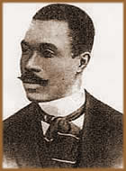
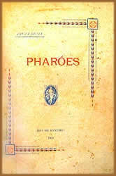

João
da Cruz e Sousa nasceu a 24 de novembro de 1861 em Nossa Senhora
do Desterro, capital da Província de Santa Catarina, atualmente,
Florianópolis. O nome João da Cruz é uma
alusão ao Santo homenageado no dia de seu nascimento, San
Juan de la Cruz. Filho dos escravos alforriados Guilherme, pedreiro;
e de Eva Carolina da Conceição, cozinheira e lavadeira,
João da Cruz foi criado pelo Coronel Guilherme Xavier de
Sousa (que viria tornar-se Marechal) e sua esposa Clarinda Fagundes
de Sousa, que não tiveram filhos. Assim, acabou por herdar
o nome Sousa e obteve uma educação proporcional
a dos brancos abastados de seu tempo. Com apenas 9 anos de idade
já escrevia e recitava seus poemas para os familiares.
Com o falecimento de seu protetor em 1870, as condições
de vida tornaram-se menos confortáveis para o jovem João
da Cruz.
Em 1871, entrou no Ateneu Provincial Catarinense.
A partir de 1877, lecionava aulas particulares por necessidade
financeira e impressionava seus companheiros de estudo pela capacidade
intelectual. Conhecedor profundo de francês, chegou a ser
citado numa carta do naturalista alemão Fritz Muller. Nesta
carta dirigida ao próprio irmão em 1876, o naturalista
citava João da Cruz como um exemplo contrário das
teorias de inferioridade intelectual dos negros.
No ano de 1877, suas obras poéticas passaram
a ser publicadas em jornais de Santa Catarina. Ao lado dos amigos
Virgílio Várzea e Santos Lostada, João da
Cruz fundou um jornal literário intitulado "O Colombo",
em 1881. No ano seguinte fundo a "Folha Popular". Nesta
mesma época, partiu em excursão pelo Brasil junto
a uma companhia teatral e declamava seus poemas nos intervalos
das apresentações. Também se engajou na luta
social e passou a liderar conferências abolicionistas. Em
1883, foi nomeado promotor da cidade de Laguna. Mas não
chegou a assumir o cargo devido ao furor preconceituoso de chefes
políticos da região.
Em 1885 publica seu primeiro livro de co-autoria
de Virgílio Várzea, intitulado Tropos e Fantasias.
Até 1888 atuou em jornais, revistas e no centro da Imigração
da Província de Santa Catarina. Neste mesmo ano, viajou
para o Rio de Janeiro a convite de Oscar Rosas.
Em 1891 transferiu-se definitivamente para a então
capital da República, Rio de Janeiro. A partir daí
entrou em contato com novos movimentos literários vindos
da França. Neste caso, João da Cruz e Sousa identificou-se
especialmente com o chamado Simbolismo. O negro sulista
que se enveredava pelos caminhos do Simbolismo, sofria duras críticas
do meio intelectual de sua época; já que nesse momento,
o Parnasianismo era a referência literária
emergente.
Em
novembro de 1893 casou-se com Gavita Rosa Gonçalves, também
descendente de escravos africanos. Deste matrimônio nasceram
quatro filhos, Raul, Guilherme, Reinaldo e João. Mas todos
faleceram de tuberculose pulmonar. Sua esposa, ainda sofreu de
distúrbios mentais que chegaram a refletir até mesmo
nos escritos do poeta.
Ainda em 1893 publicou dois livros: Missal
(influenciado pela prosa de Baudelaire)
e Broquéis; obras que marcaram o lançamento
do movimento simbolista brasileiro. Em 1897, concluiu um livro
de prosa poética denominado Evocações.
Quando preparava-se para publicá-lo, viu-se abatido pela
tuberculose e partiu para Minas Gerais em busca de tratamento.
Faleceu em 19 de março de 1898 aos 36 anos de idade. Seu
corpo foi levado para o Rio de Janeiro num vagão para transporte
de gado. O amigo José do Patrocínio pagou as despesas
com o funeral e o enterro no cemitério São Francisco
Xavier. No ano de sua morte ainda foi publicado Evocações.
Em 1900, Faróis; e em 1905, o volume de Últimos
Sonetos.
O negro que contrariou o preconceito racial e se
pôs a liderança do Simbolismo brasileiro, é
autor de uma obra que traz versos como: "Anda em mim,
soturnamente / Uma tristeza ociosa / Sem objetivo, latente / Vaga,
indecisa, medrosa" (Tristeza Do Infinito - Últimos
Sonetos). Além de: "De dentro da senzala
escura e lamacenta / Aonde o infeliz / De lágrimas em fel,
de ódio se alimenta / Tornando meretriz" (Da Senzala
– O Livro Derradeiro). Percebe-se num primeiro momento
o sofrimento de uma alma que ecoou diretamente em sua obra. Mas
posteriormente, a consciência social e humanista de um cidadão.
Cruz e Sousa, o Dante Negro ou Cisne Negro, foi um poeta Simbolista
que ainda não obteve o reconhecimento literário
devido, mas agrega em sua obra a essência única de
um autor que cativa e comove por sua autenticidade.
"Que importa
que morra o poeta? Importa que não morra o poema!"
(Cruz e Sousa)
Por Spectrum
Obras
Disponíveis:
Conto (Download)